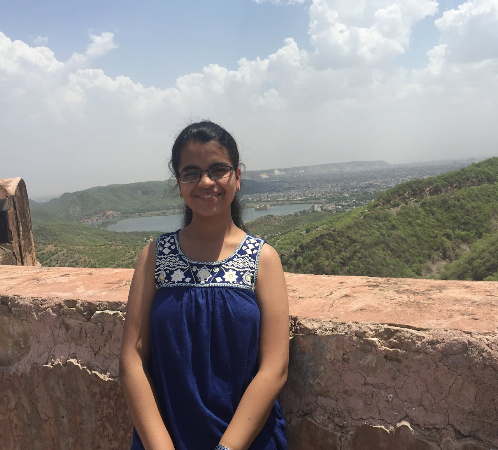

Hi! I'm Meghna, a 1st year PhD Student in the Department of Human Centered Design and Engineering at the University of Washington. I am advised by Prof. Julie Kientz and Prof. Audrey Desjardins.
My research interests lie in Human-Computer Interaction (HCI) and Computer Supported Cooperative Work (CSCW), particularly focusing on understanding the emergent socio-technical practices of marginalized populations to design more inclusive and culturally-appropriate technologies that can meaningfully impact their lives. Specifically, I am interested in the future of healthcare work, focusing on designing fair and technology-augmented workflows for healthcare workers by understanding their care routines and sociotechnical work practices.
Prior to that, I spent incredible 2.5 years as a Research Fellow at Microsoft Research India, where I worked with Dr. Indrani Medhi Thies and Dr. Mohit Jain in the Technology and Empowerment Group (TEM). At MSR, I worked on research problems around information, communication, and technologies for development, especially in the Global South.
I received my bachelor's degree (honors) in computer science engineering from IIIT Delhi, where I also had the fortune to work with and be mentored by Dr. Grace Eden and Dr. Pushpendra Singh.
Connect with me at megupta@uw.edu. I'm always eager to discuss research, explore relevant opportunities, or engage in a friendly chat!
Understanding the Technology-Mediated Home Phlebotomy Ecosystem in India.
Meghna Gupta*, Nimisha Karnatak*, Mohit Jain (* = Equal Contribution)
Forthcoming at PACM CSCW, 2024
[pdf]
Jod: Examining Design and Implementation of a Videoconferencing Platform for Mixed Hearing Groups
Anant Mittal, Meghna Gupta, Roshni Poddar, Tarini Naik, SeethaLakshmi Kuppuraj, James Fogarty, Pratyush Kumar, Mohit Jain
ASSETS, 2023
[pdf]
Imagining Caring Futures for Frontline Health Work
Azra Ismail, Deepika Yadav, Meghna Gupta Kirti Dabas, Pushpendra Singh, Neha Kumar
PACM CSCW, 2022
[pdf]
Sophistication with Limitation: Understanding Smartphone Usage Among Emergent Users in India
Meghna Gupta, Devansh Mehta, Anandita Punj, Indrani Medhi Thies
ACM COMPASS, 2022
[pdf]
Note: Understanding the Role of Technology-mediated Solutions for Women's Safety in Urban India
Jasmeet Kaur, Meghna Gupta, Pushpendra Singh
ACM COMPASS, 2022
[pdf]
The Human-Air Interface: Responding To Poor Air Quality Through Lived Experience and Digital Information
Meghna Gupta, Grace Eden
ACM DIS, 2022
[pdf]
AICA: Artificial Intelligence Conversation Assistant
Arpit Bhatia, Meghna Gupta, Abhishek Gupta, Nishtha Singhal
ACM DIS, 2020 (Student Design Competition)
[pdf]
Seeking Digital Care in Low-Resourced Contexts: Identifying Opportunities and Challenges
Meghna Gupta
In Information-Seeking, Finding Identity: Exploring the Role of Online Health Information in Illness Experience Workshop at Computer-supported Cooperative Work (CSCW'22)
[pdf]
Meaning in Language: From Professional to Local Contexts
Meghna Gupta, Grace Eden
In (Coping With) Messiness in Ethnography Workshop at European Computer-supported Cooperative Work (ECSCW'20)
[pdf]
CHI 2024, CHI 2023, CSCW 2022, CHI 2022, CHI LBW 2021
DIS 2022
What does working in HCI for Global Development look like? (Introduction to HCI, Winter 2022 @ IIIT Delhi)